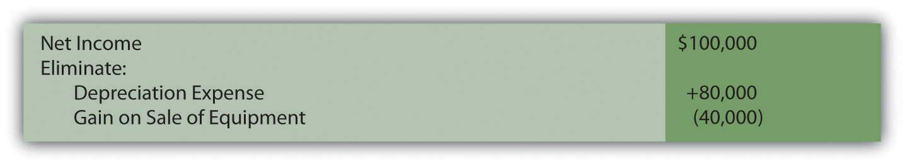
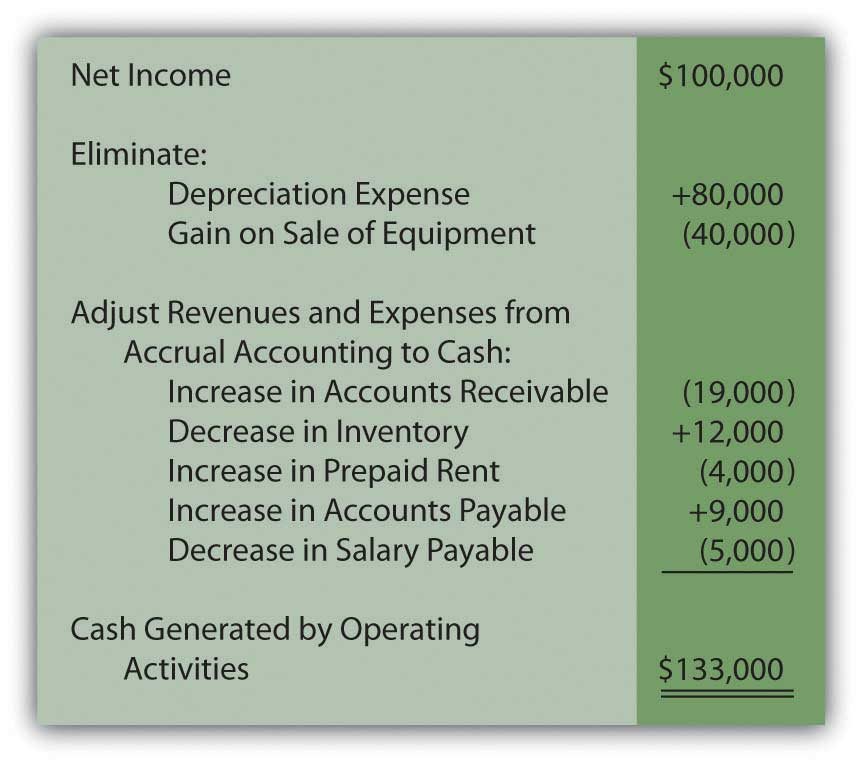

At the end of this section, students should be able to meet the following objectives:
Question: As mentioned, most organizations do not choose to present their operating activity cash flows using the direct method despite preference by FASB. Instead, this information is shown within a statement of cash flows by means of the indirect method. How does the indirect method of reporting operating activity cash flows differ from the direct method?
Answer: The indirect method actually follows the same set of procedures as the direct method except that it begins with net income rather than the business’s entire income statement. After that, the three steps demonstrated previously are followed although the mechanical process here is different.
Question: In the income statement presented above for the Liberto Company, net income was reported as $100,000. That included depreciation expense (a noncash item) of $80,000 and a gain on the sale of equipment (an investing activity rather than an operating activity) of $40,000. In applying the indirect method, how are noncash items and nonoperating gains and losses removed from net income?
Answer: Depreciation is an expense and, hence, a negative component of net income. To eliminate a negative, it is offset by a positive. Adding back depreciation serves to remove its impact from the reporting company’s net income.
The gain on sale of equipment also exists within reported income but as a positive figure. It helped increase profits this period. To eliminate this gain, the $40,000 amount must be subtracted. The cash flows resulting from this transaction came from an investing activity and not an operating activity.
In applying the indirect method, a negative is removed by addition; a positive is removed by subtraction.
Figure 17.7 Operating Activity Cash Flows, Indirect Method—Elimination of Noncash and Nonoperating Balances
In the direct method, these two amounts were simply omitted in arriving at the individual cash flows from operating activities. In the indirect method, they are both physically removed from income by reversing their effect. The impact is the same in the indirect method as in the direct method.
Question: After all noncash and nonoperating items are removed from net income, only the changes in the balance sheet connector accounts must be utilized to complete the conversion to cash. For Liberto, those balances were shown previously.
Each of these increases and decreases was used in the direct method to turn accrual accounting figures into cash balances. That same process is followed in the indirect method. How are changes in an entity’s connector accounts reflected in the application of the indirect method?
Answer: Although the procedures appear to be different, the same logic is applied in the indirect method as in the direct method. The change in each of these connector accounts has an impact on the cash amount and it can be logically determined. However, note that the effect is measured on the net income as a whole rather than on individual revenue and expense accounts.
Accounts receivable increased by $19,000. This rise in the receivable balance shows that less money was collected than the sales made during the period. Receivables go up because customers are slow to pay. This change results in a lower cash balance. Thus, the $19,000 should be subtracted in arriving at the cash flow amount generated by operating activities. The cash received was actually less than the figure reported for sales within net income. Subtract $19,000.
Inventory decreased by $12,000. A drop in the amount of inventory on hand indicates that less was purchased during the period. Buying less merchandise requires a smaller amount of cash to be paid. That leaves the balance higher. The $12,000 should be added. Add $12,000.
Prepaid rent increased by $4,000. An increase in any prepaid expense shows that more of the asset was acquired during the year than was consumed. This additional purchase requires the use of cash; thus, the balance is lowered. The increase in prepaid rent necessitates a $4,000 subtraction in the operating activity cash flow computation. Subtract $4,000.
Accounts payable increased by $9,000. Any jump in a liability means that Liberto paid less cash during the period than the debts that were incurred. Postponing liability payments is a common method for saving cash and keeping the reported balance high. The $9,000 should be added. Add $9,000.
Salary payable decreased by $5,000. Liability balances fall when additional payments are made. Those cash transactions are reflected in applying the indirect method by a $5,000 subtraction. Subtract $5,000.
Therefore, if Liberto Company uses the indirect method to report its cash flows from operating activities, the information will take the following form.
Figure 17.8 Liberto Company Statement of Cash Flows for Year One, Operating Activities Reported by Indirect Method
As with the direct method, the final total is a net cash inflow of $133,000. In both cases, the starting spot was net income (either as a single number or the income statement as a whole). Then, any noncash items were removed as well as nonoperating gains and losses. Finally, the changes in the connector accounts that bridge the time period between U.S. GAAP recognition and the cash exchange are determined and included so that only cash from operating activities remains. The actual cash increase or decrease is not affected by the presentation of this information.
In reporting operating activity cash flows by means of the indirect method, the following pattern exists.
A quick visual comparison of the direct method and the indirect method can make the two appear almost completely unrelated. However, when analyzed, the same steps are incorporated in each. They both begin with the income for the period. Noncash items and nonoperating gains and losses are removed. Changes in the connector accounts for the period are factored in so that only the cash from operations remains.
Link to multiple-choice question for practice purposes: http://www.quia.com/quiz/2092976.html
Link to multiple-choice question for practice purposes: http://www.quia.com/quiz/2092977.html
Question: When reporting cash flows from operating activities for the year ended December 31, 2008, EMC Corporation listed an inflow of over $240 million labeled as “dividends and interest received” as well as an outflow of nearly $74 million shown as “interest paid.”
Unless a company is a bank or financing institution, dividend and interest revenues do not appear to relate to its central operating function. For most businesses, these inflows are fundamentally different from the normal sale of goods and services. Monetary amounts collected as dividends and interest resemble investing activity cash inflows because they are usually generated from noncurrent assets. Similarly, interest expense is an expenditure normally associated with noncurrent liabilities rather than resulting from daily operations. It could be argued that it is a financing activity cash outflow.
Why is the cash collected as dividends and interest and the cash paid as interest reported within operating activities on a statement of cash flows rather than investing activities and financing activities?
Answer: Authoritative pronouncements that create U.S. GAAP are the subject of years of intense study, discussion, and debate. In this process, controversies often arise. When FASB Statement 95, Statement of Cash Flows, was issued in 1987, three of the seven board members voted against its passage. Their opposition, at least in part, came from the handling of interest and dividends. On page ten of that standard, they argue “that interest and dividends received are returns on investments in debt and equity securities that should be classified as cash inflows from investing activities. They believe that interest paid is a cost of obtaining financial resources that should be classified as a cash outflow for financing activities.”
The other board members were not convinced. Thus, inclusion of dividends collected, interest collected, and interest paid within an entity’s operating activities became a part of U.S. GAAP. Such disagreements arise frequently in the creation of official accounting rules.
The majority of the board apparently felt that—because these transactions occur on a regular ongoing basis—a better portrait of the organization’s cash flows is provided by including them within operating activities. At every juncture of financial accounting, multiple possibilities for reporting exist. Rarely is complete consensus ever achieved as to the most appropriate method of presenting financial information.
Following is the conclusion of our interview with Robert A. Vallejo, partner with the accounting firm PricewaterhouseCoopers.
Question: Any company that follows U.S. GAAP and issues an income statement must also present a statement of cash flows. Cash flows are classified as resulting from operating activities, investing activities, or financing activities. Are IFRS rules the same for the statement of cash flows as those found in U.S. GAAP?
Rob Vallejo: Differences do exist between the two frameworks for the presentation of the statement of cash flows, but they are relatively minor. Probably the most obvious issue involves the reporting of interest and dividends that are received and paid. Under IFRS, interest and dividend collections may be classified as either operating or investing cash flows whereas, in U.S. GAAP, they are both required to be shown within operating activities. A similar difference exists for interest and dividends payments. These cash outflows can be classified as either operating or financing activities according to IFRS. For U.S. GAAP, interest payments are viewed as operating activities whereas dividend payments are considered financing activities. As is common in much of IFRS, more flexibility is available.
Most reporting entities use the indirect method to report cash flows from operating activities. This presentation begins with net income and then eliminates any noncash items (such as depreciation expense) as well as nonoperating gains and losses. Their impact on net income is reversed to create this removal. The changes in balance sheet connector accounts for the year (such as accounts receivables, inventory, accounts payable, and salary payable) must also be taken into consideration in converting from accrual accounting to cash. An analysis is made of the effect on both cash and net income in order to make the proper adjustments. Cash transactions that result from interest revenue, dividend revenue, and interest expense are all left within operating activities because they happen regularly. However, some argue that interest and dividend collections are really derived from investing activities and interest payments relate to financing activities.